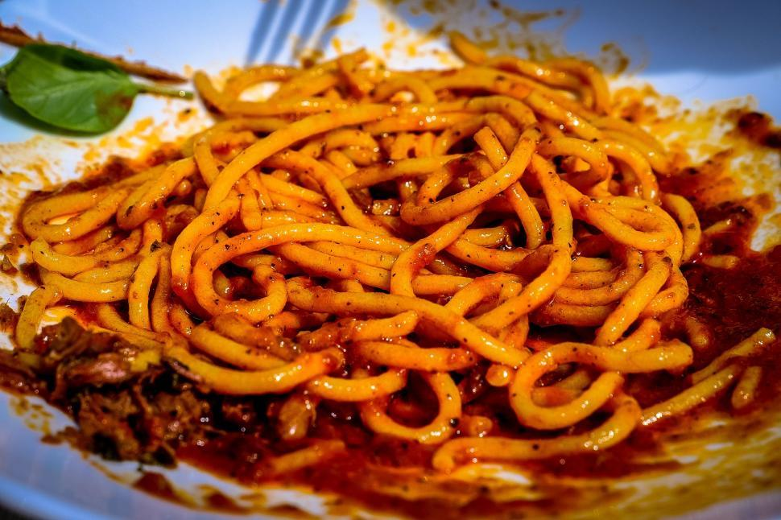

Spaghetti

Mama Mia Look At These Noodles
These are noodles.
With some sauce
Sauce Ingredients
- 1 tablespoon olive oil
- 2 cloves garlic, minced
- 3 cups tomato puree
- 3 cups water
- 1 teaspoon salt, or to taste
Spaghetti Ingredients
- ¼ cup olive oil
- 2 teaspoons red chili flakes, or to taste
- 6 ounces dry spaghetti
- salt to taste
- 1 tablespoon finely chopped parsley, for garnish
Steps
- Gather all ingredients.
- Heat olive oil in a pot over medium heat.
Add garlic and sizzle until it starts to turn golden and fragrant, about 1 minute.
Stir in tomato puree, water, and salt.
Bring to a simmer on medium-high.
Once simmering, reduce to low heat and keep warm.
- Pour olive oil into a large non-stick skillet over medium-high heat,
season with chili flakes and heat until chili flakes start to sizzle, for 1 minute.
Add raw spaghetti and toss until well coated with chili oil.
- Do the rest
- Eat
Home